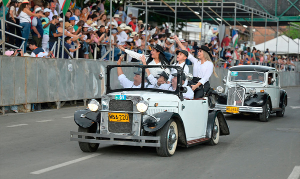

Cali fair

Old Cali Carnival
The Old Cali Carnival is a traditional parade held annually on December 28th as part of the Cali Fair. Declared an intangible cultural heritage of the city in 2015, this event is a performance that celebrates the historical memory, identity, and idiosyncrasies of Cali through troupes, music, and emblematic characters.
More information
Image taken from:

Salsódromo
The Salsódromo is the opening and most emblematic event of the Cali Fair, traditionally held every December 25th. It is a massive parade that brings together more than 2,000 professional dancers from the city's best salsa schools, who travel approximately 1.5 kilometers along the South-Eastern Highway with high-level choreography, live music, and floats.
More information
Image taken from:

Classic and Antique Car Parade
The Classic and Antique Car Parade is one of the most iconic events of the Cali Fair. It brings together more than 200 historic vehicles, including cars, motorcycles, and bicycles, which travel along the South-Eastern Highway in a veritable rolling museum that pays homage to automotive history.
More information
Image taken from: